카드 · 카카오페이 · 디지털 자산(코인) 3가지 결제수단을 지원하는 공동구매 플랫폼입니다. 백엔드 3인이 결제수단을 축으로 도메인을 수직 분리했고, 저는 코인 결제와 그 뒤의 에스크로 · 환불 · 정산을 맡았습니다.
인플루언서 공동구매는 계속 늘어나는데 그것을 위한 플랫폼은 따로 없습니다. 상품을 발견하는 곳과 구매하는 곳이 다르면 쇼핑의 흐름도 끊어집니다.
SNS로 연결된 별도의 쇼핑 사이트와 외부 링크를 오가며 상품을 탐색하고 구매해야 합니다
일반 쇼핑몰처럼 편하게 둘러보고 구매하는 경험이 부족합니다
판매자 사이트가 구매자가 보는 화면과 분리되어 있는 것이 보통입니다
구매와 판매를 하나의 흐름으로 연결합니다.
쇼핑몰에서 늘 보던 방식으로 공동구매를 둘러보게 하고,
구매하던 사람이 같은 계정 · 같은 도메인 안에서 판매자로 넘어갈 수 있게 했습니다.
판매자센터는 하위 경로 /seller 로 들어갑니다.
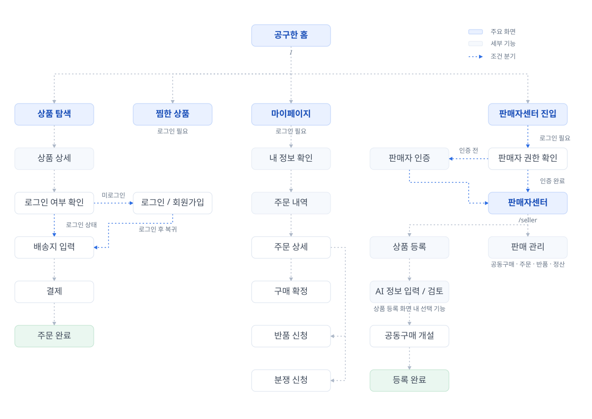
결제 자체의 난이도가 가장 높은 대신, 주변 도메인을 적게 묶는 쪽을 맡았습니다.
| 영역 | 작성 | 내용 |
|---|---|---|
| 코인 결제 | 3,312줄 | 시세 Buffer를 가산한 Quote 발급, 체인 영수증 직접 대조, 컨펌 폴링, 입금 매칭 |
| 환불 | 1,964줄 | 환불 원장, 이중 환불 차단, 온체인 송금 환불, 부분 환불 |
| 정산 | 1,861줄 | 회차별 집계 배치, 금융망 계좌이체 실행과 재시도 |
| 에스크로 | 1,117줄 | 보관 → 해제 / 환불 전이를 엔티티가 강제, 불변식 검증 |
| 판매자 제재 | 673줄 | 확정 · 기각 · 취소 판정과 쓰리아웃 |
| 정책 · 감사 로그 | 126줄 | 정책값 캐시 무효화, 관리자 조작 감사 로그 |
레이어별로 나누면(한 명은 컨트롤러, 한 명은 서비스) 세 사람이 늘 같은 파일 근처에서 작업하게 되어 충돌이 잦습니다. 결제수단을 축으로 수직 분리하니 각자 컨트롤러부터 엔티티까지 혼자 끝까지 소유해 겹치는 파일이 거의 없었습니다.
상품을 찾는 것부터 공동구매에 참여하고, 판매자가 되어 상품을 올리기까지입니다.
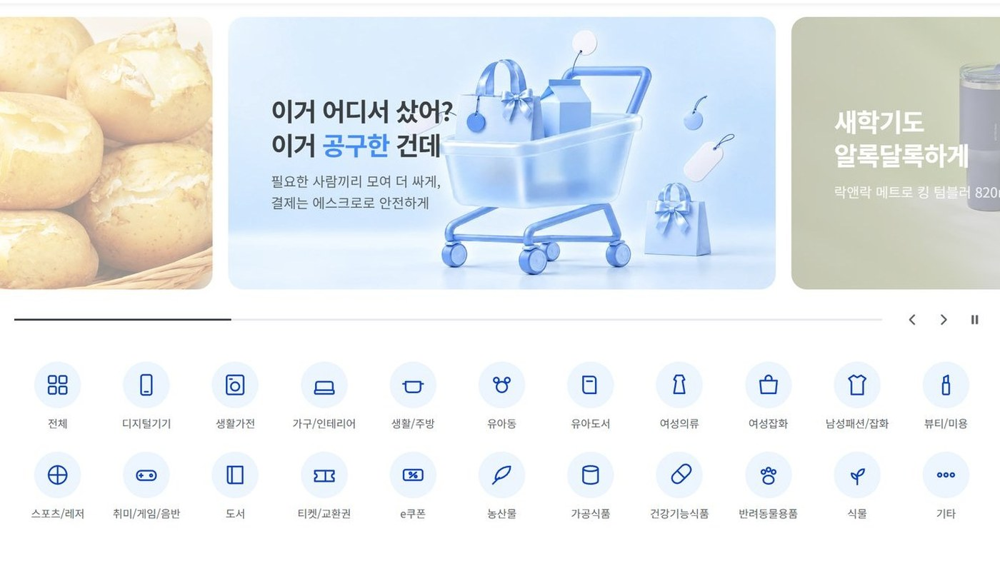
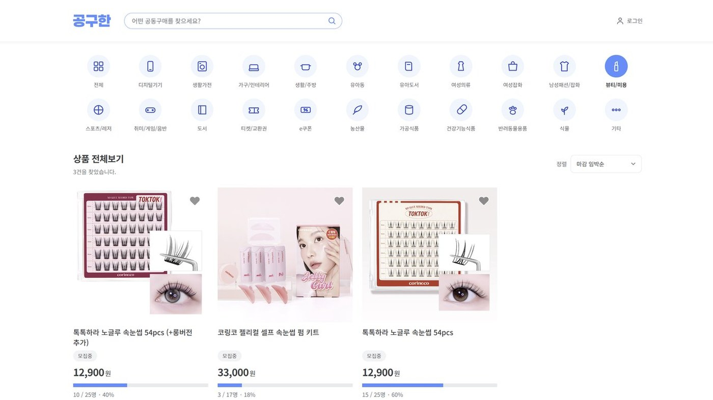
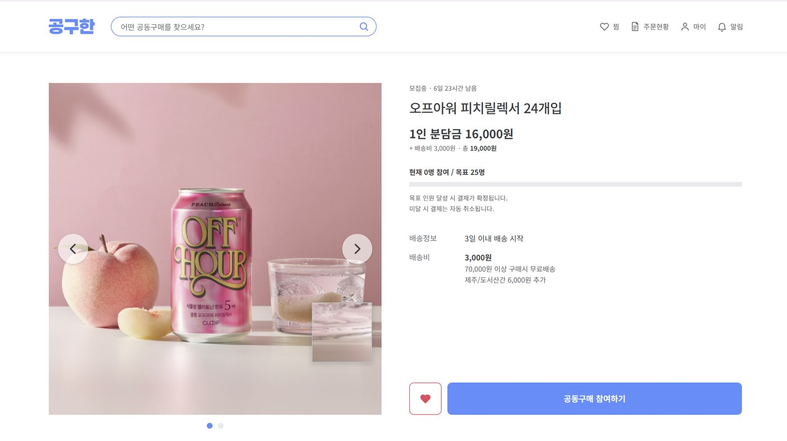
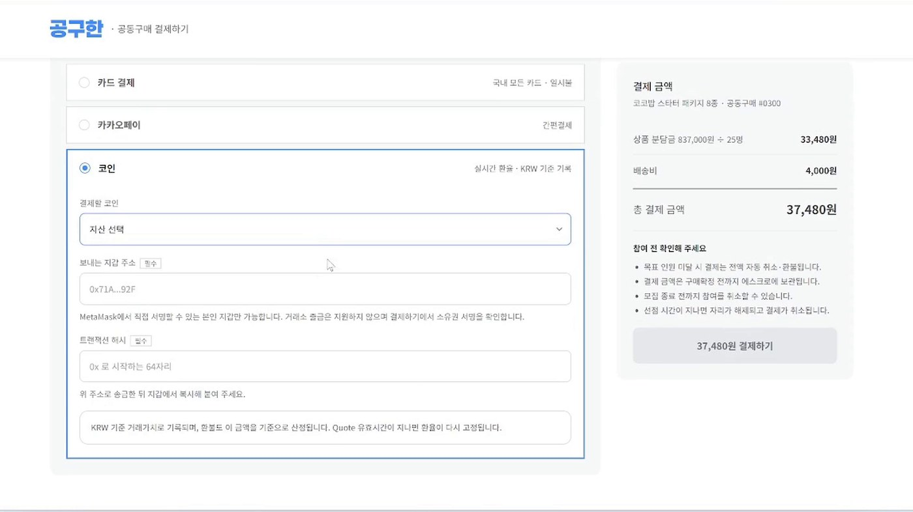
⑤ 코인을 고르면 견적 발급 → 송금 → 체인 검증 → 컨펌 순서로 진행됩니다. 이 구간은 아래에서 화면과 함께 자세히 설명합니다.
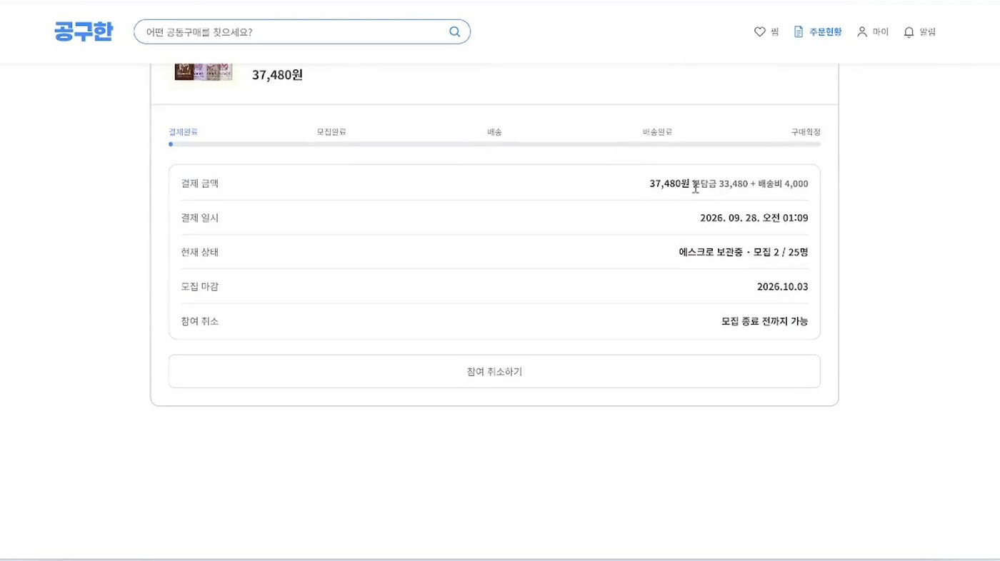
구매자가 그대로 판매자가 될 수 있습니다. 같은 계정으로, 같은 도메인 안에서 이어집니다.
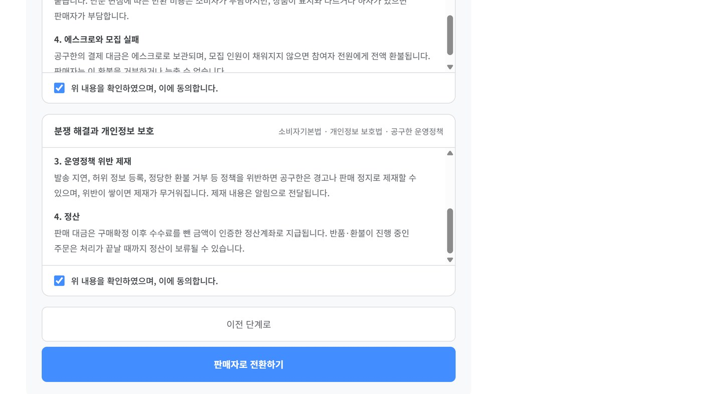
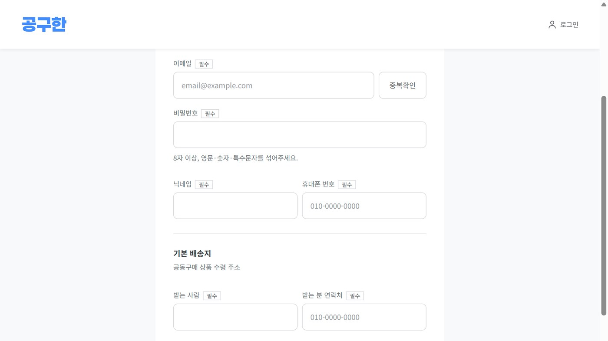
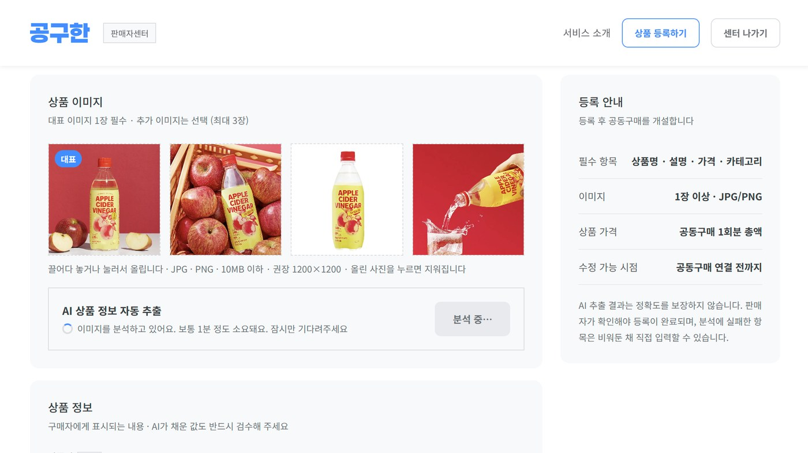
회원가입부터 판매자 상품 등록까지 3분 40초.
j15b205.p.ssafy.io 에 배포해 2026년 9월 27일까지 운영한 실제 화면입니다.
금융망과 체인을 모두 연동한 상태에서 녹화했습니다.
| 시각 | 내용 |
|---|---|
| 0:00 | 로그인 · 회원가입 |
| 0:48 | 상품 둘러보기 |
| 0:59 | 결제 — 코인 결제 전 과정 |
| 1:28 | 거래 현황 확인 |
| 1:38 | 판매자 첫 인증 |
| 2:22 | AI 상품 등록 |
코인 결제는 구매자가 자기 지갑에서 송금하고, 그 해시를 서버에 알려주는 구조입니다.
결제수단 선택부터 완료까지 31초. 코인을 고르면 견적이 발급되고 유효시간이 내려가기 시작합니다. MetaMask로 송금한 뒤 서버가 체인에서 확인하고, 컨펌이 차면 완료로 바뀝니다.
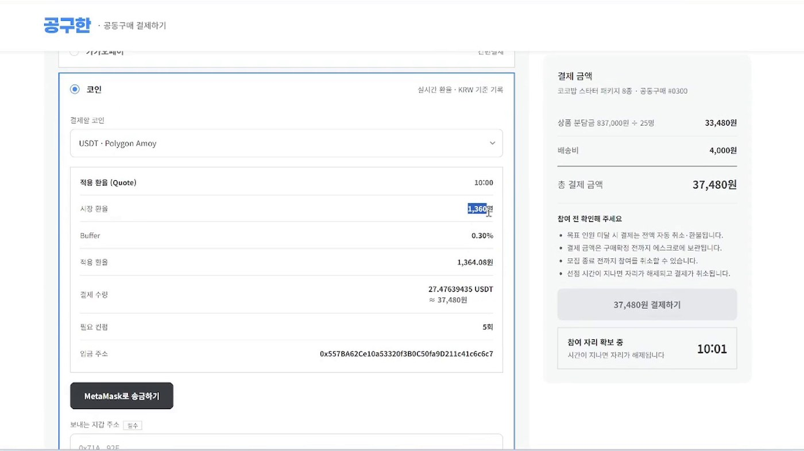
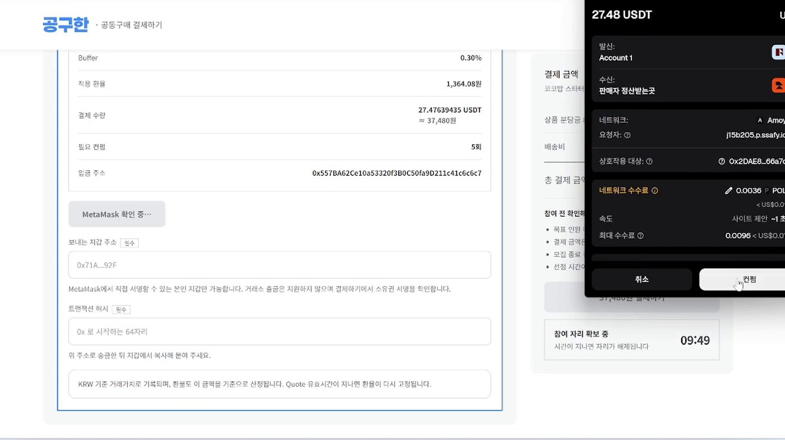
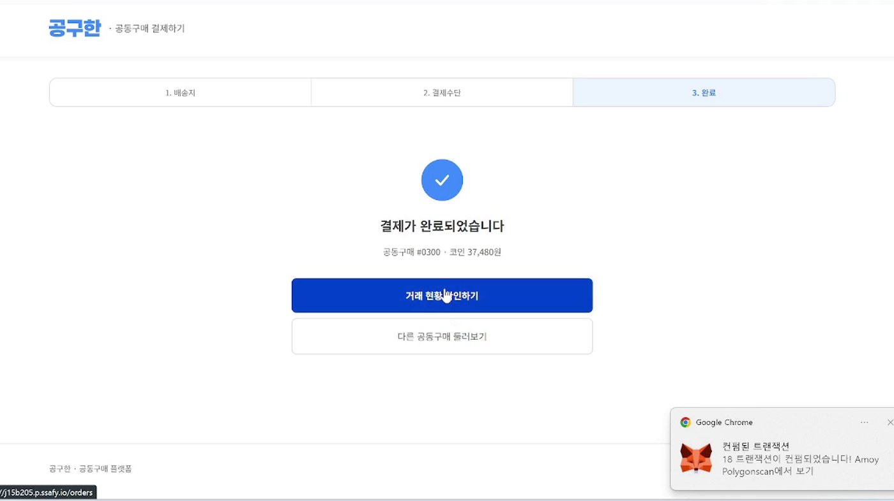
체인 호출 전에 거를 수 있는 것(소유권 · 슬롯 만료 · 중복 제출 · Quote 유효성)은 먼저 거릅니다 — 공용 테스트넷 노드는 호출 한도가 있습니다
체인 RPC는 수 초가 걸릴 수 있습니다. 그동안 DB 트랜잭션을 붙잡으면 커넥션과 잠금이 묶입니다.
검증 서비스에는 @Transactional 을 붙이지 않고
조회 → 체인 호출 → 짧은 쓰기 트랜잭션 순서로 나눴습니다.
그 대가로 중간에 들고 있는 엔티티가 detached 상태가 됩니다. 변경이 필요한 엔티티는 쓰기 트랜잭션 안에서 다시 읽어야 하며, 이 사실을 주석에 적어두었습니다.
환불 배치가 두 번 돌거나 관리자가 버튼을 두 번 누르면 돈이 두 번 나갑니다.
두 요청이 동시에 조회를 통과하면 애플리케이션 체크는 아무것도 막지 못합니다. DB 제약은 동시에 통과할 수 없습니다.
PostgreSQL이라면 WHERE status = 'ACTIVE' 조건을 붙인 부분 유니크 인덱스를 쓰면 됩니다.
MySQL에는 그 기능이 없습니다.
그래서 활성 상태에서만 값을 채우는 마커 컬럼을 두고 복합 유일성을 걸었습니다.
| 제약 | 막는 것 |
|---|---|
UNIQUE(participation_id, refund_marker) | 같은 참여 건에 두 번째 환불 |
UNIQUE(deposit_id, refund_marker) | 같은 입금에 두 번째 환불 |
UNIQUE(payment_id, refund_marker) | 같은 결제에 두 번째 환불 |
UNIQUE(tx_hash, log_index) | 체인 스캔 중복 입금 기록 |
UNIQUE(participation_id) 정산 | 배치 중복 실행 시 중복 포함 |
환불이 취소되면 마커를 비워, 그 참여 건에 다시 환불을 걸 수 있습니다. 「한 번만」이 아니라 「활성 상태는 한 번에 하나만」 을 표현한 제약입니다.
penalty_count 에 버전 컬럼이 없어, 읽고 더해서 쓰는 방식은 동시 증가에서 하나를 잃습니다.
원자적 UPDATE(SET penalty_count = penalty_count + 1)로 바꿨습니다.
정산 이체를 금융망에 요청했는데 응답을 받지 못했습니다. 이때 이체는 일어났을 수도, 안 일어났을 수도 있습니다. 실패로 간주해 자동 재시도하면 이미 나간 돈을 한 번 더 보냅니다.
UNKNOWN 은 사람이 금융망 거래내역을 확인한 뒤 처리합니다. 재처리 API도 이 상태에서는 그대로 재실행하지 못하게 막았습니다
집계 배치는 명세만 만들고, 실제 이체는 관리자가 실행합니다. 잘못 계산된 정산이 사람 확인 없이 나가면 회수가 어렵습니다.
에스크로를 해제하거나 환불하는 호출 경로가 네 개였습니다.
에스크로 보관 총액 = 미해제 참여 건의 결제금액 합계 (항상)
54,000원 결제에 단순변심 반품이면 최초 배송비를 돌려주지 않아 42,000원만 환불되고, 남은 12,000원은 판매자에게 정산되어야 합니다.
이때 보관 시작 금액은 줄이지 않고 환불 누계를 따로 쌓습니다. 불변식 점검이 보관 시작 금액과 참여 건 결제금액을 비교하므로, 줄이면 부분 환불된 건이 전부 오류로 잡힙니다.
| 영역 | 기술 |
|---|---|
| 언어 · 프레임워크 | Java 21 · Spring Boot 4.1.1 (Spring Framework 7) · Gradle 9 |
| 영속성 | Spring Data JPA (Hibernate) · QueryDSL 5.1 |
| DB · 캐시 | MySQL 8.0 (Flyway 마이그레이션) · Redis 7 |
| 인증 | Spring Security + JWT |
| 체인 연동 | web3j — Polygon Amoy (ERC-20 USDT) |
| 결제 | SSAFY 교육용 금융망 API · 카카오페이 · MetaMask |
| 저장소 | AWS S3 (SDK v2) · MinIO (로컬 통합 테스트) |
| 프론트엔드 | React 19 · Vite |
ddl-auto=validate 로 두어, 엔티티 매핑이 실제 스키마와 다르면
애플리케이션이 뜨는 순간 에러가 납니다.
스키마는 Flyway가 단일 진실 소스이고, 변경이 필요하면 새 마이그레이션을 추가합니다.
API 문서 자동화 도구를 뺐습니다. Spring Boot 4(Framework 7)와 Spring Data 버전이 충돌해 기동이 실패하는 것을 확인했습니다. 호환 버전이 나오면 추가하기로 하고 그 사실을 문서에 남겼습니다.
S3 자격증명을 설정 파일에 두지 않습니다. AWS SDK 기본 자격증명 체인을 써서 로컬은 환경변수, 배포는 EC2 인스턴스 프로필을 사용합니다.
초기 EC2 배포 구성을 만들어 서비스를 처음 올렸습니다 —
백엔드·프론트엔드 Dockerfile(멀티스테이지), 운영용 compose,
Nginx 설정(SPA 서빙과 /api 리버스 프록시), 운영 프로필, 배포 가이드까지
9개 파일 495줄입니다.
이후 j15b205.p.ssafy.io 에서 2026년 9월 27일까지 운영했습니다.
담당 도메인 테스트 5,689줄을 작성했습니다. MinIO를 띄워 운영과 동일한 S3 어댑터로 업로드 · 공개 URL 조회 · 바이트 일치 · 삭제 후 404까지 확인하는 통합 테스트도 포함돼 있습니다.
설계 당시의 판단과 그 대가를 함께 기록했습니다.
| 한계 | 상태 |
|---|---|
| 멱등 키를 형식 검증만 하고 저장하지 않음 | 실제 이중 실행 차단은 원장의 UNIQUE 제약이 담당합니다. 키 기반 응답 캐싱은 별도 저장소가 필요해 미구현 |
| Quote 소유 결제를 DB로 확인할 수 없음 | 견적 테이블에 결제 식별자 컬럼이 없어 원화 금액 일치로 대신 확인합니다. 금액이 같은 남의 견적을 써도 환율만 고정될 뿐 이득이 없고, 사용 표시가 중복 사용을 막습니다 |
| 테스트넷 기준 | Polygon Amoy에서 검증했습니다. 메인넷 가스비·혼잡 상황은 다룰 수 없었습니다 |
| 에스크로는 내부 원장 | 실 자금 보관은 전자금융거래법 규제 대상이라 상태 관리만 수행합니다 |
| 결과 불명 정산 건 | 사람 개입이 필수입니다. 자동 복구 경로가 없고, 이는 의도한 설계입니다 |